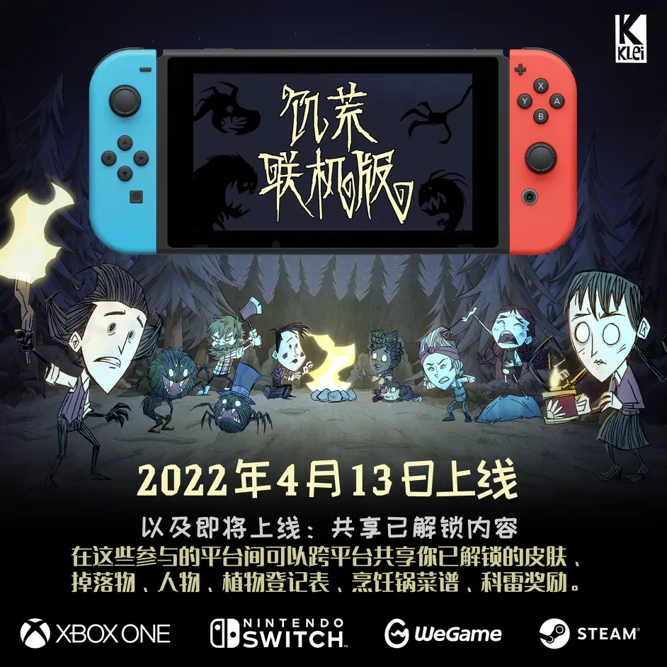

自从《饥荒联机版》发布以来，我们就一直在努力制作各种资源，方便玩家可以通过不同方式得到酷炫的物品皮肤。很快，各位玩家就能在参与的平台之间跨平台使用自己的皮肤了。
我们预计这项功能会在4月13日，《饥荒联机版》在任天堂Switch上线当天启用。我们现在还在做一些收尾工作，应该很快就能推出。

索尼Playstation什么时候会支持？
我们现在还不知道。我们正在努力，但是在Playstation上实现这个功能的技术要求较为复杂，我们工作室的规模暂时还没有这个能力。
我们很长一段时间都在准备这个功能，目前已经有了多个平台参与，所以我们决定在这个时候发布。我们理解部分玩家会感到十分失望，我们承诺，只要我们具备了实现所需功能的能力，我们一定会尽快落实开发。
这是一个什么样的过程？
我们会在这项功能发布时公布更多细节，大致上是：当玩家得到掉落物时，这项掉落物会发放到科雷账户中，游戏会从科雷账户中获得物品。大家很快就可以将多个不同平台的账户合成为一个科雷账户，在支持的平台间无缝使用物品。同步的内容包括：烹饪锅菜谱、植物登记表、物品皮肤、通过掉落和编织获得的人物、以及皮肤。
布卷（主机平台付费货币）不能跨平台共享。
掉落物会受到什么影响？
账号关联之后，所有连接的不同平台账户会共享同一个掉落物品池。所有连接的平台账户会被视作同一个科雷账户。
那是不是也可以跨平台游戏呢？
不行，不过也许将来可以？和共享物品一样，跨平台游戏我们也是一直想实现的。不过，除了工作量巨大以外，还有些东西是我们这样的小团队不具备的。但时代在变化，希望在未来像这样的事情对所有开发者来说都会变得更容易。
还有别的吗？
团队仍在努力完成这一功能。我们将在发布时提供更多信息，包括账户合并的细节以及功能详情。